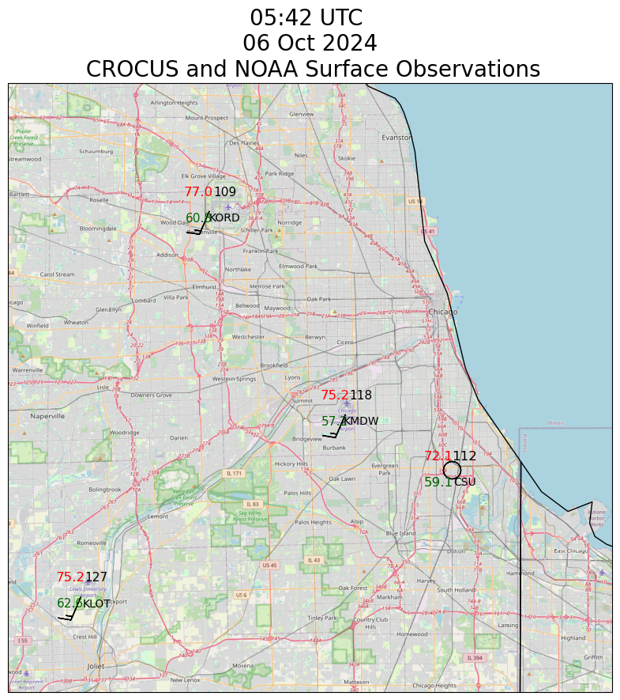

Plot Station Maps Combining CROCUS and NOAA Data#
Show code cell source
from PythonMETAR import Metar
import datetime
import cartopy.crs as ccrs
import cartopy.feature as cfeature
from cartopy.io.img_tiles import GoogleTiles, OSM
import metpy.calc as mpcalc
from metpy.calc import reduce_point_density, wind_components
from metpy.calc import dewpoint_from_relative_humidity, wet_bulb_temperature
from metpy.calc import altimeter_to_station_pressure
from metpy.units import units
from metpy.io import parse_metar_to_dataframe
from metpy.io import metar
from metpy.plots import current_weather, sky_cover, StationPlot
import sage_data_client
import matplotlib.pyplot as plt
import pandas as pd
import xarray as xr
Show code cell source
def pressure_to_altimeter(pressure, height):
pressure = pressure.to("hPa").m
height = height.to("m").m
return ((pressure - 0.3) * ((1 +(((1013.25 ** 0.190284) * 0.0065)/288) * (height / ((pressure - 0.3) ** 0.190284))) ** (1/0.190284)) * units.hPa).to("inHg")
Show code cell source
wxt_global_NEIU = {'conventions': "CF 1.10",
'site_ID' : "NEIU",
'CAMS_tag' : "CMS-WXT-002",
'datastream' : "CMS_wxt536_NEIU_a1",
'datalevel' : "a1",
"plugin" : "registry.sagecontinuum.org/jrobrien/waggle-wxt536:0.*",
'WSN' : 'W08D',
'latitude' : 41.9804526,
'longitude' : -87.7196038}
wxt_global_NU = {'conventions': "CF 1.10",
'WSN':'W099',
'site_ID' : "NU",
'CAMS_tag' : "CMS-WXT-005",
'datastream' : "CMS_wxt536_NU_a1",
'plugin' : "registry.sagecontinuum.org/jrobrien/waggle-wxt536:0.*",
'datalevel' : "a1",
'latitude' : 42.051469749,
'longitude' : -87.677667183}
wxt_global_CSU = {'conventions': "CF 1.10",
'WSN':'W08E',
'site_ID' : "CSU",
'CAMS_tag' : "CMS-WXT-003",
'datastream' : "CMS_wxt536_CSU_a1",
'plugin' : "local/waggle-wxt536",
'datalevel' : "a1",
'latitude' : 41.71996846,
'longitude' : -87.612805717}
wxt_global_ATMOS = {'conventions': "CF 1.10",
'WSN':'W0A4',
'site_ID' : "ATMOS",
'CAMS_tag' : "CMS-WXT-001",
'datastream' : "CMS_wxt536_ATMOS_a1",
'plugin' : "registry.sagecontinuum.org/jrobrien/waggle-wxt536:0.*",
'datalevel' : "a1",
'latitude' : 41.7016264,
'longitude' : -87.9956515}
wxt_global_UIC = {'conventions': "CF 1.10",
'WSN':'W096',
'site_ID' : "UIC",
'CAMS_tag' : "CMS-WXT-011",
'datastream' : "CMS_wxt536_UIC_a1",
'plugin' : "10.31.81.1:5000/local/waggle-wxt536.*",
'datalevel' : "a1",
'latitude' : 41.869407936,
'longitude' : -87.645806251}
var_attrs_wxt = {'temperature': {'standard_name' : 'air_temperature',
'units' : 'celsius'},
'humidity': {'standard_name' : 'relative_humidity',
'units' : 'percent'},
'dewpoint': {'standard_name' : 'dew_point_temperature',
'units' : 'celsius'},
'pressure': {'standard_name' : 'air_pressure',
'units' : 'hPa'},
'wind_mean_10s': {'standard_name' : 'wind_speed',
'units' : 'celsius'},
'wind_max_10s': {'standard_name' : 'wind_speed',
'units' : 'celsius'},
'wind_dir_10s': {'standard_name' : 'wind_from_direction',
'units' : 'degrees'},
'rainfall': {'standard_name' : 'precipitation_amount',
'units' : 'kg m-2'}}
Show code cell source
def ingest_wxt_latest(global_attrs, var_attrs):
# Access the last ten minutes of data
df_temp = sage_data_client.query(start="-10m",
filter={
"name" : 'wxt.env.temp|wxt.env.humidity|wxt.env.pressure|wxt.rain.accumulation',
"vsn" : global_attrs['WSN'],
"sensor" : "vaisala-wxt536"
}
)
winds = sage_data_client.query(start="-10m",
filter={
"name" : 'wxt.wind.speed|wxt.wind.direction',
"vsn" : global_attrs['WSN'],
"sensor" : "vaisala-wxt536"
}
)
hums = df_temp[df_temp['name']=='wxt.env.humidity']
temps = df_temp[df_temp['name']=='wxt.env.temp']
pres = df_temp[df_temp['name']=='wxt.env.pressure']
rain = df_temp[df_temp['name']=='wxt.rain.accumulation']
npres = len(pres)
nhum = len(hums)
ntemps = len(temps)
nrains = len(rain)
minsamps = min([nhum, ntemps, npres, nrains])
temps['time'] = pd.DatetimeIndex(temps['timestamp'].values)
vals = temps.set_index('time')[0:minsamps]
vals['temperature'] = vals.value.to_numpy()[0:minsamps]
vals['humidity'] = hums.value.to_numpy()[0:minsamps]
vals['pressure'] = pres.value.to_numpy()[0:minsamps]
vals['rainfall'] = rain.value.to_numpy()[0:minsamps]
direction = winds[winds['name']=='wxt.wind.direction']
speed = winds[winds['name']=='wxt.wind.speed']
nspeed = len(speed)
ndir = len(direction)
minsamps = min([nspeed, ndir])
speed['time'] = pd.DatetimeIndex(speed['timestamp'].values)
windy = speed.set_index('time')[0:minsamps]
windy['speed'] = windy.value.to_numpy()[0:minsamps]
windy['direction'] = direction.value.to_numpy()[0:minsamps]
winds10mean = windy.resample('10S').mean(numeric_only=True).ffill()
winds10max = windy.resample('10S').max(numeric_only=True).ffill()
dp = dewpoint_from_relative_humidity( vals.temperature.to_numpy() * units.degC,
vals.humidity.to_numpy() * units.percent)
vals['dewpoint'] = dp
vals10 = vals.resample('10S').mean(numeric_only=True).ffill() #ffil gets rid of nans due to empty resample periods
wb = wet_bulb_temperature(vals10.pressure.to_numpy() * units.hPa,
vals10.temperature.to_numpy() * units.degC,
vals10.dewpoint.to_numpy() * units.degC)
vals10['wetbulb'] = wb
vals10['wind_dir_10s'] = winds10mean['direction']
vals10['wind_mean_10s'] = winds10mean['speed']
vals10['wind_max_10s'] = winds10max['speed']
_ = vals10.pop('value')
vals10xr = xr.Dataset.from_dataframe(vals10)
vals10xr = vals10xr.sortby('time')
vals10xr = vals10xr.assign_attrs(global_attrs)
for varname in var_attrs.keys():
vals10xr[varname] = vals10xr[varname].assign_attrs(var_attrs[varname])
return vals10xr
Show code cell source
kord = parse_metar_to_dataframe(Metar('KORD').metar)
kmdw = parse_metar_to_dataframe(Metar('KMDW').metar)
klot = parse_metar_to_dataframe(Metar('KLOT').metar)
ds_list = []
station_ids = []
elevations = []
metars = pd.concat([kord, kmdw, klot])
try:
xNU = ingest_wxt_latest(wxt_global_NU, var_attrs_wxt).isel(time=-1)
xNU['latitude'] = xNU.attrs['latitude']
xNU['longitude'] = xNU.attrs['longitude']
xNU['site'] = 'NU'
elevations.append(187)
ds_list.append(xNU)
except:
pass
try:
xNEIU = ingest_wxt_latest(wxt_global_NEIU, var_attrs_wxt).isel(time=-1)
xNEIU['latitude'] = xNEIU.attrs['latitude']
xNEIU['longitude'] = xNEIU.attrs['longitude']
xNEIU['site'] = 'NEIU'
elevations.append(182)
ds_list.append(xNEIU)
except:
pass
try:
xUIC = ingest_wxt_latest(wxt_global_UIC, var_attrs_wxt).isel(time=-1)
xUIC['latitude'] = xUIC.attrs['latitude']
xUIC['longitude'] = xUIC.attrs['longitude']
xUIC['site'] = 'UIC'
elevations.append(181)
ds_list.append(xUIC)
except:
pass
try:
xATMOS = ingest_wxt_latest(wxt_global_ATMOS, var_attrs_wxt).isel(time=-1)
xATMOS['latitude'] = xATMOS.attrs['latitude']
xATMOS['longitude'] = xATMOS.attrs['longitude']
xATMOS['site'] = 'ATMOS'
elevations.append(231)
ds_list.append(xATMOS)
except:
pass
try:
xCSU = ingest_wxt_latest(wxt_global_CSU, var_attrs_wxt).isel(time=-1)
xCSU['latitude'] = xCSU.attrs['latitude']
xCSU['longitude'] = xCSU.attrs['longitude']
xCSU['site'] = 'CSU'
elevations.append(176)
ds_list.append(xCSU)
except:
pass
ds = xr.concat(ds_list, dim='site')
data = ds.to_dataframe()
data['station_id'] = list(ds.site.values)
data["elevation"] = elevations
# Compute altimeter and mslp values
data["altimeter"] = pressure_to_altimeter(data.pressure.values * units.hPa, 176 * units.meter)
data["mslp"] = mpcalc.altimeter_to_sea_level_pressure(data.altimeter.values * units.inHg,
data.elevation.values * units.meter,
data.temperature.values * units.degC).to("hPa")
Downloading file 'sfstns.tbl' from 'https://github.com/Unidata/MetPy/raw/v1.6.3/staticdata/sfstns.tbl' to '/home/runner/.cache/metpy/v1.6.3'.
Downloading file 'master.txt' from 'https://github.com/Unidata/MetPy/raw/v1.6.3/staticdata/master.txt' to '/home/runner/.cache/metpy/v1.6.3'.
Downloading file 'stations.txt' from 'https://github.com/Unidata/MetPy/raw/v1.6.3/staticdata/stations.txt' to '/home/runner/.cache/metpy/v1.6.3'.
Downloading file 'airport-codes.csv' from 'https://github.com/Unidata/MetPy/raw/v1.6.3/staticdata/airport-codes.csv' to '/home/runner/.cache/metpy/v1.6.3'.
/tmp/ipykernel_3406/812442133.py:52: FutureWarning: 'S' is deprecated and will be removed in a future version, please use 's' instead.
winds10mean = windy.resample('10S').mean(numeric_only=True).ffill()
/tmp/ipykernel_3406/812442133.py:53: FutureWarning: 'S' is deprecated and will be removed in a future version, please use 's' instead.
winds10max = windy.resample('10S').max(numeric_only=True).ffill()
/tmp/ipykernel_3406/812442133.py:58: FutureWarning: 'S' is deprecated and will be removed in a future version, please use 's' instead.
vals10 = vals.resample('10S').mean(numeric_only=True).ffill() #ffil gets rid of nans due to empty resample periods
/tmp/ipykernel_3406/812442133.py:52: FutureWarning: 'S' is deprecated and will be removed in a future version, please use 's' instead.
winds10mean = windy.resample('10S').mean(numeric_only=True).ffill()
/tmp/ipykernel_3406/812442133.py:53: FutureWarning: 'S' is deprecated and will be removed in a future version, please use 's' instead.
winds10max = windy.resample('10S').max(numeric_only=True).ffill()
/tmp/ipykernel_3406/812442133.py:58: FutureWarning: 'S' is deprecated and will be removed in a future version, please use 's' instead.
vals10 = vals.resample('10S').mean(numeric_only=True).ffill() #ffil gets rid of nans due to empty resample periods
/tmp/ipykernel_3406/812442133.py:52: FutureWarning: 'S' is deprecated and will be removed in a future version, please use 's' instead.
winds10mean = windy.resample('10S').mean(numeric_only=True).ffill()
/tmp/ipykernel_3406/812442133.py:53: FutureWarning: 'S' is deprecated and will be removed in a future version, please use 's' instead.
winds10max = windy.resample('10S').max(numeric_only=True).ffill()
/tmp/ipykernel_3406/812442133.py:58: FutureWarning: 'S' is deprecated and will be removed in a future version, please use 's' instead.
vals10 = vals.resample('10S').mean(numeric_only=True).ffill() #ffil gets rid of nans due to empty resample periods
/tmp/ipykernel_3406/812442133.py:52: FutureWarning: 'S' is deprecated and will be removed in a future version, please use 's' instead.
winds10mean = windy.resample('10S').mean(numeric_only=True).ffill()
/tmp/ipykernel_3406/812442133.py:53: FutureWarning: 'S' is deprecated and will be removed in a future version, please use 's' instead.
winds10max = windy.resample('10S').max(numeric_only=True).ffill()
/tmp/ipykernel_3406/812442133.py:58: FutureWarning: 'S' is deprecated and will be removed in a future version, please use 's' instead.
vals10 = vals.resample('10S').mean(numeric_only=True).ffill() #ffil gets rid of nans due to empty resample periods
/tmp/ipykernel_3406/812442133.py:31: SettingWithCopyWarning:
A value is trying to be set on a copy of a slice from a DataFrame.
Try using .loc[row_indexer,col_indexer] = value instead
See the caveats in the documentation: https://pandas.pydata.org/pandas-docs/stable/user_guide/indexing.html#returning-a-view-versus-a-copy
temps['time'] = pd.DatetimeIndex(temps['timestamp'].values)
/tmp/ipykernel_3406/812442133.py:46: SettingWithCopyWarning:
A value is trying to be set on a copy of a slice from a DataFrame.
Try using .loc[row_indexer,col_indexer] = value instead
See the caveats in the documentation: https://pandas.pydata.org/pandas-docs/stable/user_guide/indexing.html#returning-a-view-versus-a-copy
speed['time'] = pd.DatetimeIndex(speed['timestamp'].values)
/tmp/ipykernel_3406/812442133.py:52: FutureWarning: 'S' is deprecated and will be removed in a future version, please use 's' instead.
winds10mean = windy.resample('10S').mean(numeric_only=True).ffill()
/tmp/ipykernel_3406/812442133.py:53: FutureWarning: 'S' is deprecated and will be removed in a future version, please use 's' instead.
winds10max = windy.resample('10S').max(numeric_only=True).ffill()
/tmp/ipykernel_3406/812442133.py:58: FutureWarning: 'S' is deprecated and will be removed in a future version, please use 's' instead.
vals10 = vals.resample('10S').mean(numeric_only=True).ffill() #ffil gets rid of nans due to empty resample periods
/home/runner/miniconda3/envs/instrument-cookbooks-dev/lib/python3.10/site-packages/xarray/core/dataset.py:4802: UserWarning: No index created for dimension site because variable site is not a coordinate. To create an index for site, please first call `.set_coords('site')` on this object.
warnings.warn(
Show code cell source
# Set up the map projection
proj = ccrs.LambertConformal(central_longitude=-95, central_latitude=35,
standard_parallels=[35])
# Use the Cartopy map projection to transform station locations to the map and
# then refine the number of stations plotted by setting a 300km radius
point_locs = proj.transform_points(ccrs.PlateCarree(), data['longitude'].values,
data['latitude'].values)
fig = plt.figure(figsize=(20, 10))
tiler = OSM()
mercator = tiler.crs
#add_metpy_logo(fig, 1100, 300, size='large')
ax = fig.add_subplot(1, 1, 1, projection=mercator)
# Add some various map elements to the plot to make it recognizable.
ax.add_feature(cfeature.LAND)
ax.add_feature(cfeature.OCEAN)
#ax.add_feature(cfeature.NaturalEarthFeature("physical", "land", "10m"),
# ec="red", fc="yellow", lw=2, alpha=0.4)
#ax.add_feature(cfeature.LAKES)
ax.add_feature(cfeature.COASTLINE)
ax.add_feature(cfeature.STATES)
ax.add_feature(cfeature.BORDERS)
ax.add_image(tiler, 11)
# Set plot bounds
ax.set_extent((-88.2, -87.4, 41.5, 42.1))
#
# Here's the actual station plot
#
# Start the station plot by specifying the axes to draw on, as well as the
# lon/lat of the stations (with transform). We also the fontsize to 12 pt.
stationplot = StationPlot(ax, data['longitude'].values, data['latitude'].values,
clip_on=True, transform=ccrs.PlateCarree(), fontsize=12)
stationplot.plot_parameter('NW', (data['temperature'].values * units.degC).to("degF"), color='red', formatter = '0.1f')
stationplot.plot_parameter('SW', (data['dewpoint'].values * units.degC).to("degF"),
color='darkgreen', formatter = '0.1f')
stationplot.plot_parameter('NE', data['mslp'].values,
formatter=lambda v: format(10 * v, '.0f')[-3:])
ew, nw = wind_components((data['wind_mean_10s'].values * units.meter_per_second).to("knot") ,
data['wind_dir_10s'].values * units.degrees_north)
stationplot.plot_barb(ew, nw)
stationplot.plot_text('SE', data['station_id'].values, fontsize=10)
stationplot_metars = StationPlot(ax, metars['longitude'].values, metars['latitude'].values,
clip_on=True, transform=ccrs.PlateCarree(), fontsize=12)
stationplot_metars.plot_parameter('NW', (metars['air_temperature'].values * units.degC).to("degF"), color='red', formatter = '0.1f')
stationplot_metars.plot_parameter('SW', (metars['dew_point_temperature'].values * units.degC).to("degF"),
fontsize=11,
color='darkgreen', formatter = '0.1f')
stationplot_metars.plot_parameter('NE', metars['air_pressure_at_sea_level'].values,
fontsize=11,
formatter=lambda v: format(10 * v, ' .0f')[-3:])
ew, nw = wind_components(metars['wind_speed'].values * units.knot ,
metars['wind_direction'].values * units.degrees_north)
stationplot_metars.plot_barb(ew, nw)
stationplot_metars.plot_text('SE', metars['station_id'].values, fontsize=10)
plt.title(pd.to_datetime(data.time.values[0]).strftime("%H:%M UTC \n %d %b %Y \n CROCUS and NOAA Surface Observations"), fontsize=20)
plt.savefig("current-conditions-crocus.png", dpi=300)
/home/runner/miniconda3/envs/instrument-cookbooks-dev/lib/python3.10/site-packages/cartopy/io/__init__.py:241: DownloadWarning: Downloading: https://naturalearth.s3.amazonaws.com/10m_physical/ne_10m_land.zip
warnings.warn(f'Downloading: {url}', DownloadWarning)
/home/runner/miniconda3/envs/instrument-cookbooks-dev/lib/python3.10/site-packages/cartopy/io/__init__.py:241: DownloadWarning: Downloading: https://naturalearth.s3.amazonaws.com/10m_physical/ne_10m_ocean.zip
warnings.warn(f'Downloading: {url}', DownloadWarning)
---------------------------------------------------------------------------
HTTPError Traceback (most recent call last)
Cell In[6], line 76
74 stationplot_metars.plot_text('SE', metars['station_id'].values, fontsize=10)
75 plt.title(pd.to_datetime(data.time.values[0]).strftime("%H:%M UTC \n %d %b %Y \n CROCUS and NOAA Surface Observations"), fontsize=20)
---> 76 plt.savefig("current-conditions-crocus.png", dpi=300)
File ~/miniconda3/envs/instrument-cookbooks-dev/lib/python3.10/site-packages/matplotlib/pyplot.py:1228, in savefig(*args, **kwargs)
1225 fig = gcf()
1226 # savefig default implementation has no return, so mypy is unhappy
1227 # presumably this is here because subclasses can return?
-> 1228 res = fig.savefig(*args, **kwargs) # type: ignore[func-returns-value]
1229 fig.canvas.draw_idle() # Need this if 'transparent=True', to reset colors.
1230 return res
File ~/miniconda3/envs/instrument-cookbooks-dev/lib/python3.10/site-packages/matplotlib/figure.py:3395, in Figure.savefig(self, fname, transparent, **kwargs)
3393 for ax in self.axes:
3394 _recursively_make_axes_transparent(stack, ax)
-> 3395 self.canvas.print_figure(fname, **kwargs)
File ~/miniconda3/envs/instrument-cookbooks-dev/lib/python3.10/site-packages/matplotlib/backend_bases.py:2204, in FigureCanvasBase.print_figure(self, filename, dpi, facecolor, edgecolor, orientation, format, bbox_inches, pad_inches, bbox_extra_artists, backend, **kwargs)
2200 try:
2201 # _get_renderer may change the figure dpi (as vector formats
2202 # force the figure dpi to 72), so we need to set it again here.
2203 with cbook._setattr_cm(self.figure, dpi=dpi):
-> 2204 result = print_method(
2205 filename,
2206 facecolor=facecolor,
2207 edgecolor=edgecolor,
2208 orientation=orientation,
2209 bbox_inches_restore=_bbox_inches_restore,
2210 **kwargs)
2211 finally:
2212 if bbox_inches and restore_bbox:
File ~/miniconda3/envs/instrument-cookbooks-dev/lib/python3.10/site-packages/matplotlib/backend_bases.py:2054, in FigureCanvasBase._switch_canvas_and_return_print_method.<locals>.<lambda>(*args, **kwargs)
2050 optional_kws = { # Passed by print_figure for other renderers.
2051 "dpi", "facecolor", "edgecolor", "orientation",
2052 "bbox_inches_restore"}
2053 skip = optional_kws - {*inspect.signature(meth).parameters}
-> 2054 print_method = functools.wraps(meth)(lambda *args, **kwargs: meth(
2055 *args, **{k: v for k, v in kwargs.items() if k not in skip}))
2056 else: # Let third-parties do as they see fit.
2057 print_method = meth
File ~/miniconda3/envs/instrument-cookbooks-dev/lib/python3.10/site-packages/matplotlib/backends/backend_agg.py:496, in FigureCanvasAgg.print_png(self, filename_or_obj, metadata, pil_kwargs)
449 def print_png(self, filename_or_obj, *, metadata=None, pil_kwargs=None):
450 """
451 Write the figure to a PNG file.
452
(...)
494 *metadata*, including the default 'Software' key.
495 """
--> 496 self._print_pil(filename_or_obj, "png", pil_kwargs, metadata)
File ~/miniconda3/envs/instrument-cookbooks-dev/lib/python3.10/site-packages/matplotlib/backends/backend_agg.py:444, in FigureCanvasAgg._print_pil(self, filename_or_obj, fmt, pil_kwargs, metadata)
439 def _print_pil(self, filename_or_obj, fmt, pil_kwargs, metadata=None):
440 """
441 Draw the canvas, then save it using `.image.imsave` (to which
442 *pil_kwargs* and *metadata* are forwarded).
443 """
--> 444 FigureCanvasAgg.draw(self)
445 mpl.image.imsave(
446 filename_or_obj, self.buffer_rgba(), format=fmt, origin="upper",
447 dpi=self.figure.dpi, metadata=metadata, pil_kwargs=pil_kwargs)
File ~/miniconda3/envs/instrument-cookbooks-dev/lib/python3.10/site-packages/matplotlib/backends/backend_agg.py:387, in FigureCanvasAgg.draw(self)
384 # Acquire a lock on the shared font cache.
385 with (self.toolbar._wait_cursor_for_draw_cm() if self.toolbar
386 else nullcontext()):
--> 387 self.figure.draw(self.renderer)
388 # A GUI class may be need to update a window using this draw, so
389 # don't forget to call the superclass.
390 super().draw()
File ~/miniconda3/envs/instrument-cookbooks-dev/lib/python3.10/site-packages/matplotlib/artist.py:95, in _finalize_rasterization.<locals>.draw_wrapper(artist, renderer, *args, **kwargs)
93 @wraps(draw)
94 def draw_wrapper(artist, renderer, *args, **kwargs):
---> 95 result = draw(artist, renderer, *args, **kwargs)
96 if renderer._rasterizing:
97 renderer.stop_rasterizing()
File ~/miniconda3/envs/instrument-cookbooks-dev/lib/python3.10/site-packages/matplotlib/artist.py:72, in allow_rasterization.<locals>.draw_wrapper(artist, renderer)
69 if artist.get_agg_filter() is not None:
70 renderer.start_filter()
---> 72 return draw(artist, renderer)
73 finally:
74 if artist.get_agg_filter() is not None:
File ~/miniconda3/envs/instrument-cookbooks-dev/lib/python3.10/site-packages/matplotlib/figure.py:3162, in Figure.draw(self, renderer)
3159 # ValueError can occur when resizing a window.
3161 self.patch.draw(renderer)
-> 3162 mimage._draw_list_compositing_images(
3163 renderer, self, artists, self.suppressComposite)
3165 renderer.close_group('figure')
3166 finally:
File ~/miniconda3/envs/instrument-cookbooks-dev/lib/python3.10/site-packages/matplotlib/image.py:132, in _draw_list_compositing_images(renderer, parent, artists, suppress_composite)
130 if not_composite or not has_images:
131 for a in artists:
--> 132 a.draw(renderer)
133 else:
134 # Composite any adjacent images together
135 image_group = []
File ~/miniconda3/envs/instrument-cookbooks-dev/lib/python3.10/site-packages/matplotlib/artist.py:72, in allow_rasterization.<locals>.draw_wrapper(artist, renderer)
69 if artist.get_agg_filter() is not None:
70 renderer.start_filter()
---> 72 return draw(artist, renderer)
73 finally:
74 if artist.get_agg_filter() is not None:
File ~/miniconda3/envs/instrument-cookbooks-dev/lib/python3.10/site-packages/cartopy/mpl/geoaxes.py:525, in GeoAxes.draw(self, renderer, **kwargs)
520 self.imshow(img, extent=extent, origin=origin,
521 transform=factory.crs, *factory_args[1:],
522 **factory_kwargs)
523 self._done_img_factory = True
--> 525 return super().draw(renderer=renderer, **kwargs)
File ~/miniconda3/envs/instrument-cookbooks-dev/lib/python3.10/site-packages/matplotlib/artist.py:72, in allow_rasterization.<locals>.draw_wrapper(artist, renderer)
69 if artist.get_agg_filter() is not None:
70 renderer.start_filter()
---> 72 return draw(artist, renderer)
73 finally:
74 if artist.get_agg_filter() is not None:
File ~/miniconda3/envs/instrument-cookbooks-dev/lib/python3.10/site-packages/matplotlib/axes/_base.py:3137, in _AxesBase.draw(self, renderer)
3134 if artists_rasterized:
3135 _draw_rasterized(self.figure, artists_rasterized, renderer)
-> 3137 mimage._draw_list_compositing_images(
3138 renderer, self, artists, self.figure.suppressComposite)
3140 renderer.close_group('axes')
3141 self.stale = False
File ~/miniconda3/envs/instrument-cookbooks-dev/lib/python3.10/site-packages/matplotlib/image.py:132, in _draw_list_compositing_images(renderer, parent, artists, suppress_composite)
130 if not_composite or not has_images:
131 for a in artists:
--> 132 a.draw(renderer)
133 else:
134 # Composite any adjacent images together
135 image_group = []
File ~/miniconda3/envs/instrument-cookbooks-dev/lib/python3.10/site-packages/matplotlib/artist.py:72, in allow_rasterization.<locals>.draw_wrapper(artist, renderer)
69 if artist.get_agg_filter() is not None:
70 renderer.start_filter()
---> 72 return draw(artist, renderer)
73 finally:
74 if artist.get_agg_filter() is not None:
File ~/miniconda3/envs/instrument-cookbooks-dev/lib/python3.10/site-packages/cartopy/mpl/feature_artist.py:185, in FeatureArtist.draw(self, renderer)
180 geoms = self._feature.geometries()
181 else:
182 # For efficiency on local maps with high resolution features (e.g
183 # from Natural Earth), only create paths for geometries that are
184 # in view.
--> 185 geoms = self._feature.intersecting_geometries(extent)
187 stylised_paths = {}
188 # Make an empty placeholder style dictionary for when styler is not
189 # used. Freeze it so that we can use it as a dict key. We will need
190 # to unfreeze all style dicts with dict(frozen) before passing to mpl.
File ~/miniconda3/envs/instrument-cookbooks-dev/lib/python3.10/site-packages/cartopy/feature/__init__.py:309, in NaturalEarthFeature.intersecting_geometries(self, extent)
302 """
303 Returns an iterator of shapely geometries that intersect with
304 the given extent.
305 The extent is assumed to be in the CRS of the feature.
306 If extent is None, the method returns all geometries for this dataset.
307 """
308 self.scaler.scale_from_extent(extent)
--> 309 return super().intersecting_geometries(extent)
File ~/miniconda3/envs/instrument-cookbooks-dev/lib/python3.10/site-packages/cartopy/feature/__init__.py:112, in Feature.intersecting_geometries(self, extent)
109 if extent is not None and not np.isnan(extent[0]):
110 extent_geom = sgeom.box(extent[0], extent[2],
111 extent[1], extent[3])
--> 112 return (geom for geom in self.geometries() if
113 geom is not None and extent_geom.intersects(geom))
114 else:
115 return self.geometries()
File ~/miniconda3/envs/instrument-cookbooks-dev/lib/python3.10/site-packages/cartopy/feature/__init__.py:291, in NaturalEarthFeature.geometries(self)
289 key = (self.name, self.category, self.scale)
290 if key not in _NATURAL_EARTH_GEOM_CACHE:
--> 291 path = shapereader.natural_earth(resolution=self.scale,
292 category=self.category,
293 name=self.name)
294 geometries = tuple(shapereader.Reader(path).geometries())
295 _NATURAL_EARTH_GEOM_CACHE[key] = geometries
File ~/miniconda3/envs/instrument-cookbooks-dev/lib/python3.10/site-packages/cartopy/io/shapereader.py:306, in natural_earth(resolution, category, name)
302 ne_downloader = Downloader.from_config(('shapefiles', 'natural_earth',
303 resolution, category, name))
304 format_dict = {'config': config, 'category': category,
305 'name': name, 'resolution': resolution}
--> 306 return ne_downloader.path(format_dict)
File ~/miniconda3/envs/instrument-cookbooks-dev/lib/python3.10/site-packages/cartopy/io/__init__.py:203, in Downloader.path(self, format_dict)
200 result_path = target_path
201 else:
202 # we need to download the file
--> 203 result_path = self.acquire_resource(target_path, format_dict)
205 return result_path
File ~/miniconda3/envs/instrument-cookbooks-dev/lib/python3.10/site-packages/cartopy/io/shapereader.py:359, in NEShpDownloader.acquire_resource(self, target_path, format_dict)
355 target_dir.mkdir(parents=True, exist_ok=True)
357 url = self.url(format_dict)
--> 359 shapefile_online = self._urlopen(url)
361 zfh = ZipFile(io.BytesIO(shapefile_online.read()), 'r')
363 for member_path in self.zip_file_contents(format_dict):
File ~/miniconda3/envs/instrument-cookbooks-dev/lib/python3.10/site-packages/cartopy/io/__init__.py:242, in Downloader._urlopen(self, url)
235 """
236 Returns a file handle to the given HTTP resource URL.
237
238 Caller should close the file handle when finished with it.
239
240 """
241 warnings.warn(f'Downloading: {url}', DownloadWarning)
--> 242 return urlopen(url)
File ~/miniconda3/envs/instrument-cookbooks-dev/lib/python3.10/urllib/request.py:216, in urlopen(url, data, timeout, cafile, capath, cadefault, context)
214 else:
215 opener = _opener
--> 216 return opener.open(url, data, timeout)
File ~/miniconda3/envs/instrument-cookbooks-dev/lib/python3.10/urllib/request.py:525, in OpenerDirector.open(self, fullurl, data, timeout)
523 for processor in self.process_response.get(protocol, []):
524 meth = getattr(processor, meth_name)
--> 525 response = meth(req, response)
527 return response
File ~/miniconda3/envs/instrument-cookbooks-dev/lib/python3.10/urllib/request.py:634, in HTTPErrorProcessor.http_response(self, request, response)
631 # According to RFC 2616, "2xx" code indicates that the client's
632 # request was successfully received, understood, and accepted.
633 if not (200 <= code < 300):
--> 634 response = self.parent.error(
635 'http', request, response, code, msg, hdrs)
637 return response
File ~/miniconda3/envs/instrument-cookbooks-dev/lib/python3.10/urllib/request.py:563, in OpenerDirector.error(self, proto, *args)
561 if http_err:
562 args = (dict, 'default', 'http_error_default') + orig_args
--> 563 return self._call_chain(*args)
File ~/miniconda3/envs/instrument-cookbooks-dev/lib/python3.10/urllib/request.py:496, in OpenerDirector._call_chain(self, chain, kind, meth_name, *args)
494 for handler in handlers:
495 func = getattr(handler, meth_name)
--> 496 result = func(*args)
497 if result is not None:
498 return result
File ~/miniconda3/envs/instrument-cookbooks-dev/lib/python3.10/urllib/request.py:643, in HTTPDefaultErrorHandler.http_error_default(self, req, fp, code, msg, hdrs)
642 def http_error_default(self, req, fp, code, msg, hdrs):
--> 643 raise HTTPError(req.full_url, code, msg, hdrs, fp)
HTTPError: HTTP Error 500: Internal Server Error
/home/runner/miniconda3/envs/instrument-cookbooks-dev/lib/python3.10/site-packages/cartopy/io/__init__.py:241: DownloadWarning: Downloading: https://naturalearth.s3.amazonaws.com/10m_physical/ne_10m_ocean.zip
warnings.warn(f'Downloading: {url}', DownloadWarning)
/home/runner/miniconda3/envs/instrument-cookbooks-dev/lib/python3.10/site-packages/cartopy/io/__init__.py:241: DownloadWarning: Downloading: https://naturalearth.s3.amazonaws.com/10m_physical/ne_10m_coastline.zip
warnings.warn(f'Downloading: {url}', DownloadWarning)
/home/runner/miniconda3/envs/instrument-cookbooks-dev/lib/python3.10/site-packages/cartopy/io/__init__.py:241: DownloadWarning: Downloading: https://naturalearth.s3.amazonaws.com/10m_cultural/ne_10m_admin_0_boundary_lines_land.zip
warnings.warn(f'Downloading: {url}', DownloadWarning)
